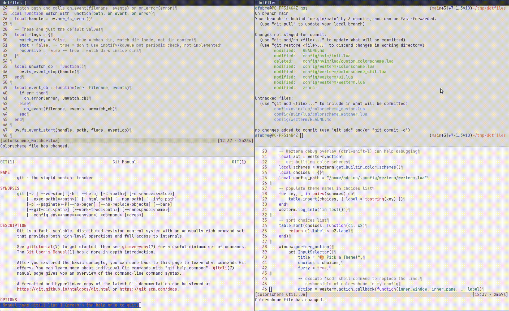

- 2568 words -
TL;DR: I wanted a keybinding to toggle between light and dark colorschemes and have the change apply immediately to all my WezTerm windows and Neovim instances across multiple running processes, using pure Lua configurations. If you want to skip the context and jump straight to the implementation, go to the solution.
Recently I've been reworking my terminal setup. After years of using gnome-terminal with tmux, I made the jump to WezTerm and replaced most of my tmux workflow with WezTerm's built-in features. The switch has been great overall, and it was the opportunity to tackle an issue which had been bothering me for a long time: I couldn't easily toggle between light and dark colorschemes and have the change apply to both my terminal and all my Neovim instances simultaneously.
In this article I'll show how I solved this problem using a shared state file and some file watching magic. If you're using WezTerm and Neovim and want synchronized colorscheme switching, this might give you some ideas for your own setup.
For colorschemes I've been using nightfox.nvim, specifically the nightfox variant for dark mode and dayfox for light mode. During the day I prefer a light theme, but when evening comes I want to switch to something easier on the eyes. One advantage of WezTerm is that by default it bundles a lot of colorschemes including the nightfox ones I was already using in Neovim.
I'm not using system-wide light/dark theme settings because I haven't integrated that well with my i3 window manager setup yet. That might change in the future, but for now I wanted something simpler that I could control directly from my terminal.
Here's what makes this tricky: I often have multiple WezTerm instances running at the same time. One for my frontend repo, another for backend, maybe a third for some side project. Each instance has several windows (the WezTerm name for tmux "tabs"), and potentially multiple Neovim instances spread across different windows. When I toggle between light and dark mode, I want all of them to update immediately.
What I needed was:
This seemed like it should be a common use case, but I couldn't find an existing solution that did exactly what I wanted.
I did some research and found that other people have faced similar issues, but the solutions weren't quite right for my needs:
This Reddit thread describes using a file to store the colorscheme name, but Neovim is responsible for changing the file. I wanted WezTerm to be in control. Also, their solution requires manually restarting WezTerm or reloading its config to apply changes.
This GitHub discussion has WezTerm updating the file, which is closer to what I wanted, but Neovim needs to be manually restarted to pick up the new colorscheme. Also, it relies on spawning a subprocess to run echo to write to the file. I wanted a pure Lua solution.
This blog post has an interesting approach where Neovim changes are based on the FocusGained autocommand event. The problem is that you need to remove and add focus to potentially all running Neovim instances for this to work, which is not ideal when you have many of them.
None of these solutions gave me the immediate, automatic synchronization I was looking for, so I decided to build my own.
Before settling on the file-based approach, I tried a couple of other ideas that didn't quite work out:
First, I experimented with using an environment variable to share the colorscheme state between WezTerm and Neovim. The problem was timing and environment variables scope: I needed to set the environment variable before WezTerm reads its configuration, and then update it when toggling. I couldn't find a convenient way to make this work, especially since environment variables set in a running WezTerm instance wouldn't propagate to other already-running instances.
I also tried using WezTerm's window:set_config_overrides() API, which allows changing configuration for a specific window at runtime. This seemed promising at first, but the overrides only applied to the single window where the keybinding was pressed, not to all WezTerm instances. This meant I'd still need some way to communicate the colorscheme change to other instances, bringing me back to square one.
These experiments led me to realize that what I needed was a simple shared state mechanism that all instances could monitor independently. That's when I landed on the file-based approach.
My approach uses a simple shared state file that both applications can read and watch for changes. Here's how it works:
The setup relies on a file at /tmp/colorscheme which contains a single line with either light or dark.
On the WezTerm side:
/tmp/colorscheme. If it doesn't exist, create it with a default value.On the Neovim side:
/tmp/colorscheme and set the appropriate colorscheme.The advantage of this approach is that WezTerm controls the toggle and all instances of both applications react immediately because they're all watching the same file.
The WezTerm implementation is split across a few modules to keep things organized. Let's walk through the key parts.
First, I created a colorscheme.lua module to handle reading, writing, and toggling the colorscheme state:
local module = {}
local light_colorscheme = 'dayfox'
local dark_colorscheme = 'nightfox'
-- Shared state file: written by WezTerm, watched by Neovim
local colorscheme_file_path = '/tmp/colorscheme'
module.default_colorscheme_mode = "light"
function create_colorscheme_file()
local file = io.open(colorscheme_file_path, "w")
file:write(module.default_colorscheme_mode)
file:close()
end
function read_colorscheme_file()
local file = io.open(colorscheme_file_path, "r")
content = file:read()
file:close()
return content
end
function init_colorscheme()
local success, content = pcall(read_colorscheme_file)
if not success then
wezterm.log_info('Could not read file content, using default')
create_colorscheme_file()
content = module.default_colorscheme_mode
end
if not (content == "light" or content == "dark") then
wezterm.log_info('Invalid mode in file, using default', content)
content = module.default_colorscheme_mode
end
if content == "light" then
return light_colorscheme
end
return dark_colorscheme
end
module.init_colorscheme = init_colorschemeThe init_colorscheme() function does the heavy lifting: it reads the state file, handles cases where the file doesn't exist or contains invalid data, and returns the appropriate colorscheme name to use in the WezTerm configuration. The use of pcall() (protected call) is important here: it executes the read_colorscheme_file() function in protected mode, catching any errors (like the file not existing) and returning a success status instead of crashing. If the call fails, we create the file with a default value.
The file operations use Lua's standard I/O library: io.open() opens a file and returns a file handle, and file:read() reads its content. These are pure Lua functions, no shell commands needed.
See the complete colorscheme.lua file on GitHub
The toggle function is straightforward. It reads the current mode, writes the opposite value to the file, and triggers a configuration reload:
function module.toggle_colorscheme(window, pane, config)
local success, content = pcall(read_colorscheme_file)
-- Lua's ternary-like expression: if content is "light", return "dark", else "light"
local new_value = content == "light" and "dark" or "light"
local file = io.open(colorscheme_file_path, "w")
if file then
file:write(new_value)
file:close()
end
-- We reload the config which triggers setup_ui() which uses
-- init_colorscheme() to setup the colorscheme based on the file content
wezterm.reload_configuration()
endWhen wezterm.reload_configuration() is called, it re-runs the entire configuration, which calls init_colorscheme() again and picks up the new value from the file.
In my ui.lua module, I call init_colorscheme() during setup:
local colorscheme = require 'colorscheme'
function module.setup_ui(config)
config.font_size = 11
config.color_scheme = colorscheme.init_colorscheme()
-- ... rest of UI configuration
endAnd in the main wezterm.lua file, everything comes together:
local wezterm = require 'wezterm'
local ui = require 'ui'
local mappings = require 'mappings'
local config = wezterm.config_builder()
ui.setup_ui(config)
mappings.setup_bindings(config)
return configSee the complete ui.lua and wezterm.lua files on GitHub
Finally, in mappings.lua, I bind the toggle function to <leader>f:
local colorscheme = require 'colorscheme'
function module.setup_bindings(config)
config.leader = { key = ' ', mods = 'CTRL', timeout_milliseconds = 1000 }
config.keys = {
-- ... other keybindings
-- Toggle light and dark colorscheme
{
key = 'f',
mods = 'LEADER',
action = wezterm.action_callback(function(window, pane)
colorscheme.toggle_colorscheme(window, pane)
end)
},
}
endWith this setup, pressing Ctrl+Space (my leader key) followed by f will toggle between light and dark modes.
See the complete mappings.lua file on GitHub
The Neovim side is simpler but requires setting up a file watcher. I put everything in a colorscheme_watcher.lua file.
I adapted some code from fwatch.nvim to create a lightweight file watcher. The core functionality uses Neovim's built-in vim.loop (the Lua bindings for the libUV library that Nvim uses for networking, filesystem, and process management):
local uv = vim.loop
local function watch_with_function(path, on_event, on_error)
local handle = uv.new_fs_event()
local flags = {
watch_entry = false,
stat = false,
recursive = false
}
local event_cb = function(err, filename, events)
if err then
on_error(error, unwatch_cb)
else
on_event(filename, events, unwatch_cb)
end
end
uv.fs_event_start(handle, path, flags, event_cb)
return handle
endThe vim.loop.new_fs_event() API provides access to the operating system's file watching capabilities (inotify on Linux, FSEvents on macOS, etc.). When the file changes, our callback function gets executed.
I created functions to read the state file and update the colorscheme accordingly:
function read_colorscheme_file()
local filepath = "/tmp/colorscheme"
-- Read the first line of the file
local content = vim.fn.readfile(filepath, '', 1)[1] or ""
if string.match(content, "light") then
return "light"
end
if string.match(content, "dark") then
return "dark"
end
-- Default case
return "dark"
end
function update_colorscheme()
if read_colorscheme_file() == "light" then
vim.g.colorsDefault = "dayfox"
vim.g.colorsDiff = "dayfox"
else
vim.g.colorsDefault = "nightfox"
vim.g.colorsDiff = "nordfox"
end
vim.cmd("colorscheme " .. vim.g.colorsDefault)
endThe vim.cmd() function executes a Vim command, so vim.cmd("colorscheme " .. vim.g.colorsDefault) is equivalent to running :colorscheme nightfox in normal mode, with the colorscheme name taken from our variable.
I use different colorschemes for diff mode, which is why I set both colorsDefault and colorsDiff variables.
Finally, I set up the colorscheme on Neovim startup and register the file watcher:
-- Setup the colorscheme on startup
update_colorscheme()
-- Update the colorscheme when WezTerm updates the colorscheme file
do_watch('/tmp/colorscheme', {
on_event = function()
print('Colorscheme file has changed.')
-- We wrap update_colorscheme in vim.schedule because the Vimscript function
-- "readfile" must not be called in a fast event context
vim.schedule(update_colorscheme)
end
})The vim.schedule() wrapper is important here. The file watcher callback runs in a "fast event" context where certain functions like readfile() are not allowed. By wrapping our update function in vim.schedule(), we defer its execution to a safe context.
See the complete colorscheme_watcher.lua file on GitHub which is then simpled required in my init.lua file.

git status and man git). I use ctrl+space+f to toggle between light mode and dark mode. We can observe a slight delay before all applications colorscheme are updated.Here's what happens when I press my toggle keybinding:
/tmp/colorscheme (let's say it contains "light")color_scheme = 'nightfox':colorscheme nightfoxThe whole process happens in a fraction of a second, giving the impression that everything updates simultaneously.
I'm fairly happy with how this feature turned out. The implementation is simple and after a few days of use, it's working well. When I press the keybinding in any WezTerm instance, every terminal window and every Neovim instance updates immediately. No manual intervention needed, no focus juggling, no restarts. I should mention that I've only tested this on Ubuntu with i3, so your mileage may vary on other systems.
Using a simple text file for state management might seem primitive, but it's actually good enough for this use case. Both applications can easily read and write to it, the file system provides the notification mechanism through the watchers, and there's no complex IPC to set up or maintain.
Note that for my shell I use zsh+oh-my-zsh with fairly minimal colors configuration which makes that the shell remains readable with both colorschemes. I also have a couple color configurations happening in my gitconfig but again they work well with both colorschemes.
For now, I'm manually controlling my colorscheme with a keybinding, but WezTerm actually has built-in support for detecting the system appearance (light or dark mode). The documentation shows how to use wezterm.gui.get_appearance() to automatically switch based on your system settings.
I think my current setup would be fairly easy to adapt for this. Instead of using a keybinding to toggle the state file, I could run a background process that watches for system appearance changes and updates /tmp/colorscheme accordingly. That way, when I toggle dark mode in my system settings, both WezTerm and Neovim would follow along automatically. And that would also allow my browsers and other GUI applications to be synced with the terminal.
But for now, the manual toggle is working well for me, and I haven't dedicated time to integrate with system-wide settings yet.
If you want to try this approach in your own setup, all the code is available in my dotfiles repository. The main files you'll need are:
config/wezterm/colorscheme.lua: Manages the state file and toggle logic for WezTermconfig/wezterm/ui.lua: Integrates the colorscheme into WezTerm's configurationconfig/wezterm/mappings.lua: Sets up the keybindingconfig/nvim/lua/colorscheme_watcher.lua: Implements the file watcher and colorscheme updates for NeovimYou can easily adapt this to use different colorschemes, a different state file location, or even extend it to have an external scrip change the colorscheme file based on your location and the time of the day. The file-based approach is flexible enough to support a lot of different use cases. (Though it might not be wise to re-create a complete external configuration system outside the default config)
If you implement something similar or have ideas for improvements, I'd love to hear about it in the comments!
Posts in the same category: [terminal]